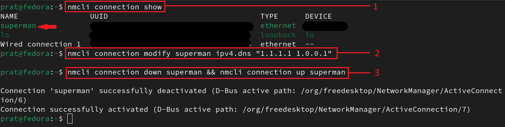

- Go to browser's Settings -> Privacy & Security
- Enable Always use private browsing mode & Safest mode in Security if its off

1 Sept, 2024
Disclaimer: This article is for educational purposes only. It is not meant to promote or encourage misuse of privacy tools. Readers are responsible for how they use this information.
TL;DR: This article is a simple guide that will help individuals understand and achieve different levels of online privacy and anonymity easily. Readers can also jump to the specific LEVEL that matches their privacy needs and learn practical steps to enhance their online security.
Hello World, in today's interconnected world, nearly everything we do is linked to the internet. This connectivity allows large corporations and governments that dominate this digital space to monitor and record almost every online activity. All of this data, once collected, is stored somewhere, creating the risk of it being breached or used against us.
We might accept some level of data collection, it's crucial to recognize that personal, private details of our lives—things we often take for granted—are also being gathered and stored, often without our knowledge.
While many websites use this data for personalized advertisements, to sell to data brokers, or to enhance customer experiences, not all websites have good intentions. Some might misuse our data for malicious purposes.
Everyone has some expectation of privacy. We don't want to indiscriminately share every single aspect of our lives with everyone else. And the fact that you are on this page means you already do care or are eager to learn more.
When you visit a web page, your browser sends various types of information to the web server, which can be used to identify and track you. This information includes:
If this information falls into the wrong hands, it can lead to tracking, fingerprinting, exploitation, or privacy breaches, all of which pose significant risks.
This guide aims to help people stay anonymous online without compromising their security and privacy by understanding the different layers of privacy, ranging from simple to complex.
We need to understand that Privacy and Anonymity both has different meanings:
So lets go through different levels of techniques and strategies you can take for getting more secure online...
Or if you want, you could jump to specific LEVEL or TOPIC directly that matched your needs. And learn about that specifically.
(Basic steps you can take right now)
Before diving into advanced privacy and security measures, start with these basic actions to protect your online activities:
(Simple, Secure and Basic privacy measures)
If you're knowledgeable about internet privacy and anonymity, then you already know that this is a no brainer. Surfing the web using your own internet connection is almost like giving your real name and address to random people you meet on street. Even using VPN or Proxies can be considered risky, as your real IP address is still visible on the other end, posing a risk of compromise.
So, connect to the internet via someone else's router (a cafe or another home for example). The worst-case scenario, if they trace your IP, is they will only know "it was someone connecting from this cafe or home".
NOTE: Always be cautious about which Wi-Fi network you connect to. Avoid connecting to any random public Wi-Fi, as it may expose you to risks like packet sniffing, data capture, and man-in-the-middle (MITM) attacks.

So make sure you're connecting to secure Wifi.
Virtual private network (VPN) acts as an intermediary between the user getting online and connecting to the internet by hiding their IP address. Using a VPN creates a private, encrypted tunnel through which a user's device can access the internet while hiding their personal information, location, and other data.
Following are some well known and secure VPN services you can use:
>>> Mullvad ⭐
[ Windows | Linux | Android | macOS | iOS ]
>>> ProtonVPN ⭐
[ Windows | Linux | Android | macOS | iOS ]
>>> IVPN
[ Windows | Linux | Android | macOS | iOS ]
here's a usefull VPN comparision post btw:
>https://www.reddit.com/r/vpns/comments/171h9qa/list_of_recommended_vpns/here's a cool VPN relationship map:
>https://kumu.io/Windscribe/vpn-relationshipsNote: A VPN does not make you anonymous, it simply masks your public IP address by replacing it with the VPN provider's IP address instead of your ISP. Your browsing session can still be traced back to your real identity process known as fingerprinting.
DNS, or Domain Name System, is a fundamental part of how the internet works. It acts as the internet's phonebook, translating human-readable domain names (like www.google.com) into IP addresses (like 172.217.10.46), which computers use to identify each other on the network.

Without using a secure, privacy-centric DNS all your web requests can be seen in the clear. You should configure your DNS queries to be managed by a service that respects privacy and supports DNS-over-TLS, DNS-over-HTTPS or DNSCrypt.

By default, the DNS server your devices use is provided by your Internet provider. To start using custom encrypted DNS services, you will need to change the DNS settings in your device or router.
Setting up encrypted DNS queries:
>>> Windows:
>>> Linux:
nmcli connection show
nmcli connection modify your-connection-name ipv4.dns "1.1.1.1 1.0.0.1"
nmcli connection down connection_name && nmcli connection up connection_name
example:
DNS leak test:

These commands sets your DNS to use Cloudflare's servers (1.1.1.1 and 1.0.0.1) You can replace these addresses with other DNS servers of your choice.
>>> Android:
Following are some well known and secure DNS service Providers you can use:
>>> NextDNS ⭐
>>> CloudFlare ⭐
>>> Quad9
>>> AdGuard
>>> 1.1.1.1 Warp (App for Android and iOS)
The web browser is the most important tool for internet browsing. It's also one of the most important tools for our privacy and security. A secure web browser can protect your personal information, passwords, and browsing habits from hackers and government surveillance.
There are many reasons why you should care about your web browser:
With the increasing number of cyber-attacks and data breaches, it is essential to have a secure browser or to make your current browser secure.
When you visit a web page, your browser automatically shares information about its configuration, such as available fonts, browser type, and installed add-ons. If this combination of details is unique, it can potentially be used to identify and track you without relying on cookies. Even if you use a secure browser, it might still be vulnerable to leaking data on malicious websites.
To see what personal identity data your browser might be leaking visit:
>https://browserleaks.com/To check what your browser is currently leaking, visit:
>https://ipleak.net/So choosing browser is essential, you cannot be using chrome and think you are secure even with VPN...
Here's an illustration I made showing which browser you should prefer based on your needs:

>>> "normal" teir browsers
These browsers are good for normal day-to-day usage. Need to be configured before, for making them privacy focused and secure. Install the recommended extensions btw.
>>> "better" teir browsers
These Browsers are more lightweight, secure and faster in general. Might need extensions
>>> "best" teir browser (?)
This browser provides enhanced privacy, anonymity, censorship circumvention, multi-layered encryption and block trackers. And you can dvelve deeper into the internet using this (which are inaccessible with normal browsers). However, it all comes at a cost of network speed, so might not be suitable for normal usage :/
some extensions/addons that are important (or you might be bombarded with ads and scripts)
Now that you have a basic understanding of how to surf the internet more "privately" without directly compromising your personal data via browser, internet, or DNS leaks, you can achieve a basic level of anonymity. By using secure browsers, masking your IP, and opting for secure DNS providers, you can take the first steps toward protecting your online privacy.
(Move More Towards Anonimity)
When communicating online, it's crucial to use privacy-oriented tools rather than conventional ones. Many companies retain logs or sell your data for advertising purposes, which compromises your privacy.
To ensure your communications remain secure and private, it's essential to choose tools that prioritize encryption and do not log your data.
Encrypted Messaging Apps:
If you're going to text, might as well text on apps that ensure that your communications remain private, with the company unable to access your messages or calls, and no ads or trackers involved. Here are some recommended apps:
Secure Email Services:
Using conventional email services like Gmail can compromise your privacy, as they often log your activities. For better security, choose an email provider that doesn't track or access your inbox. Here are some privacy-focused options:
Note: These services and apps are only recommended for secure communication, but using them for other online activities doesn't guarantee anonymity. Like sharing personal information through these email services can still expose your identity.
Since we're now moving more towards "anonymity" from this LEVEL 2 section, it's essential that you have totally secure, tracking proof browser even for normal surfing.
Even if you add extensions to strengthen Firefox even more, the default settings of Firefox are not the best choice to be a privacy respecting browser. So browser voluntarily sends information about its configuration, which can be used for Device or Browser fingerprinting. Hence, no privacy.
Hardening Firefox involves changing its configurations using a file called user.js. This process enhances security and privacy by reducing the browser's attack surface, minimizing data leaks, and preventing unwanted tracking through customized settings.
Basic settings (kind of prerequisites):
Note: Some websites may break due to these settings, as they rely on resources like cookies, scripts etc that are being blocked.
Advanced settings:
We'll set up user.js file which contains all the configurations and preferences of the browser. You can create your own custom user.js file using Firefox Profilemaker or use pre-existing ones from below:
How to use user.js files:
Using this, you can also create multiple different profiles with different level of security too.
here's an usefull video on firefox hardening:
>https://youtu.be/Fr8UFJzpNls?si=PcpTKuZ3WyXBm3Ah
Note: You just learnt firefox hardening, this doesn't make you anonymous, this process just lets your browser be safer to work on without any risk of data leakage. You need to combine these practices with other privacy measures such as using a VPN, Tor, and secure communication tools.
Tor works by routing your internet traffic through volunteer-operated servers, instead of making a direct connection to the site you're trying to visit. This obfuscates where the traffic is coming from, and no server in the connection path is able to see the full path of where the traffic is coming from and going to, meaning even the servers you are using to connect cannot break your anonymity.
When you connect to a website using Tor, your connection is routed through at least three randomly selected Tor nodes (also called relays)
Using the Tor Browser:
What happens: Your web traffic is encrypted and sent through several Tor relays (nodes) before reaching the destination. This process hides your IP address and location from the websites you visit.
You can also check your Tor Circuit on the top left corner

You can connect via Tor, but it does not guarantee complete anonymity. If the same person controls the bridge relay, exit relay, or all three relays in the Tor network, they could trace your traffic back to your IP address. While this is unlikely, it is technically possible.
Enhancing TOR security:
It's recommended that you make an effort to hide your IP address before connecting to the Tor network. You can do this by simply connecting to a VPN (through a client installed on your computer) and then accessing Tor as normal, through Tor Browser for example.
This creates a connection chain like: You → VPN → Tor → Internet
✅ Recommended combination:
❌ NOT Recommended combinations:
here's an Advanced overview on tor:
>https://www.privacyguides.org/en/advanced/tor-overview/
A virtual machine (VM) is a sandboxed operating system, running within your current system. Useful for compartmentalisation and safely testing software, or handling potentially malicious files.
Simple put, virtual machine is like having a virtual computer within your computer.
If you're dealing with risky files or websites and can't afford to compromise your personal computer, using a virtual machine is recommended. Here are some well-known virtual machine hypervisors:
Using virtual machine, you can work with different kind operating systems, enhance your security, break stuff, learn hacking safely and many more.
Now that you have solid knowledge about intermediate level of security precaution. You can enhance these up by combining these steps with previous level's steps as well, like using TOR over VPN and stuff like adding additional layers.
(Super Privacy & Anonimity Measures For Ultra Paranoids)
Now that you're at LEVEL 3 and aiming for total anonymity, this section will focus on operating system-level strategies to enhance your privacy and security.
>DO NOT USE WINDOWS, as its heavily bloated, collects data, integrated with Microsoft Services, easily exploitable, and not even open source so it can easily track what you're doing and you won't even know...
>use linux instead, its open source
Following are some heavily security oriented linux distributions you can prefer:
Tails OS:
Tails stands for The Amnesic Incognito Live System. It's a bootable Live Operating System running from a USB stick that is designed for leaving no traces. It ensures that all connections are routed through the Tor network by default.
You insert the Tails USB stick into your laptop, you'll have a fully functional operating system focused on privacy. As soon as you shut down the computer or remove that USB stick directly, everything will be gone unless you saved it somewhere.
How to use Tails:
Now you are using Tails OS and connected to TOR. Everytime you make different connections to various things on the internet, your TOR circuit will change.
Removing the USB stick will erase everything you did, including the settings that were changed.
Whonix:
Whonix is an anonymous operating system that runs like an app and routes all Internet traffic through the Tor anonymity network. It offers privacy protection and anonymity online and is available for all major operating systems.
>Unlike Tails, Whonix is specifically designed to work in a virtual machine (VM) environment.
Whonix consists of two VMs: the Whonix-Gateway and the Whonix-Workstation. The former runs Tor processes and acts as a gateway, while the latter runs user applications on a completely isolated network. This innovative architecture allows for maximum privacy, keeps applications in check and makes DNS leaks impossible.
Refer the following official documentation to install Whonix on your VM:
>https://www.whonix.org/wiki/DownloadQubes OS:
Qubes OS allows for the creation and management of isolated compartments called qubes. Each piece of software runs in its own compartment, as if it were installed on a separate physical machine, using advanced virtualization techniques.
This level of compartmentalization makes Qubes OS extremely secure. If one piece of software becomes infected, it won't affect others since they are isolated in different qubes.
Qubes OS can run multiple operating systems simultaneously within different qubes, including Fedora, Debian, and Windows, providing flexibility and enhanced security.
Here's an illustration showing how qubes os uses compartmentalization for isolating different softwares from each other:

Download Qubes OS from its official website:
>https://www.qubes-os.org/downloads/The drawback in this could be its system requirements. Its kinda heavy on our machine, specially if ran on Virtual Machine. As its recommended requirements are:
Qubes-Whonix (Whonix over Qubes):
In this configuration Whonix runs on top of Qubes inside virtual machines (VMs), just like any other OS on the same platform. This configuration provides advanced security and anonymity.
To use Qubes-Whonix, start by installing Qubes OS on your physical computer. Once Qubes is set up, you'll add two Whonix components: the Whonix Gateway and the Whonix Workstation. These templates allow for the customization and creation of multiple Whonix-Gateway ProxyVMs and Whonix-Workstation AppVMs.
This configuration provides enhanced compartmentalization of your activities, which significantly improves privacy and security by isolating different tasks within separate, secure environments.
read more about this in details here:
>https://www.whonix.org/wiki/Qubes
PGP is short for Pretty Good Privacy, a security program that enables users to communicate securely by decrypting and encrypting messages, authenticating messages through digital signatures, and encrypting files.
How it works:
> Receiver generates two keys (public & private key).
> Receiver sends you public key and keeps private key.
> You encrypt the message with that receiver's public key.
> You send the encrypted message to receiver.
> Receiver decrypts the message using his private key.
In this case, Even if someone intercepts the encrypted message and your public key, they can't decrypt it without the receiver's private key.
Here's an illustration showing the use of PGP:
You can use Kleopatra for managing PGP keys.
Kleopatra is a certificate manager that helps you encrypt, decrypt, sign, and verify emails and files using PGP/GPG encryption.
How it works: It allows you to create and manage PGP key pairs (public and private keys). You can encrypt files or emails using someone's public key and decrypt them with your private key, ensuring that only the intended recipient can read the data.
Kleopatra typically comes pre-installed on secure operating systems like tails...
Here are some PHYSICAL actions you can take for anonymization if you are super paranoids about your privacy:
Combine these with all possible techniques of previous levels, and you should have a solid anonymous and secure presence on the internet.
In today's digital era, achieving 100% online anonymity is nearly impossible. However, you can significantly enhance your privacy and maintain a certain level of anonymity by taking control of your online actions. In this article, you explored various methods and hierarchy of techniques that can make you more secure and private online, While complete 100% anonymity isn't guaranteed, you can aim for at least 80% anonymity.
I will keep updating this article time to time, as this is a very vast and evolving topic.
If you wish to contribute to this article, feel free to do so through this repository:
>https://github.com/ProgrammerPratik/ProgrammerPratik.github.io/tree/master/articles
>https://anonymousplanet.org/guide.html
>https://www.privacyguides.org/en/advanced/tor-overview/
>https://developers.cloudflare.com/1.1.1.1/
>https://spyboy.blog/2023/08/26/achieving-online-anonymity-a-comprehensive-guide/